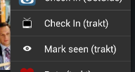

<div class="row"> 

    <div class="span6">
        <h1>Getting Started</h1>
        
        <div class="spacer"></div> 
        
        <h2>Sync between devices/with trakt</h2>
        <p>First, you have to set up each device. You only have to do this <strong>once</strong>:</p>
        <ol>
            <li>Set up your trakt.tv account in <strong>Settings</strong>.</li>
            <li>On older versions make sure <strong>Integrate with trakt.tv</strong> is enabled in <strong>Settings</strong>.</li>
            <li>Do initial syncing via <strong>Sync with trakt.tv</strong> in <strong>Settings</strong>.</li>  
        </ol> 
        
        <div class="row">
	        <div class="span4">
	        	<p>From now on you just have to either <strong>Check In (trakt)</strong> or <strong>Mark seen (trakt)</strong> an episode.</p><p>The next time your devices update checked in/marked seen episodes are automatically fetched from trakt.</p>
	        </div>       
	        <div class="span2">
	        	
	        </div>
        </div>
        <div class="spacer"></div>
        
        <h2>Backup or restore your show database</h2>
        <p>To backup or restore your show database go into <strong>Settings</strong> and look for <strong>Backup/Restore</strong>. There you will find instructions on how to proceed.</p>
        
        <div class="spacer"></div>

        <h2>Keep your shows up to date</h2>
        <p><strong>You don't have to!</strong> If you make sure <strong>Auto Update</strong> is enabled in <strong>Settings</strong>, SeriesGuide updates every show every 7 days. However there are three options to manually update your shows:</p>
        <br/>
        <dl>
	        <dt>Update outdated shows</dt>
	        <dd>Press the update icon (double arrows). This will update all shows which have not been updated for 7 or more days. Enabling <strong>Auto Update</strong> in <strong>Settings</strong> does the same thing on opening the show list.</dd>
	        <br/>
	        <dt>Update a single show</dt>
	        <dd>Sometimes you may want to get the latest info for just one show. To do this long-press on a show in the show list and select <em>Update</em>.</dd>
	        <br/>
	        <dt>Update all shows</dt>
	        <dd>To get fresh data for every show, regardless when it has been updated last, press the menu button on your device and select <em>Update (all)</em>.</dd>
        </dl>
    </div> <!-- span -->
</div> <!-- row -->
